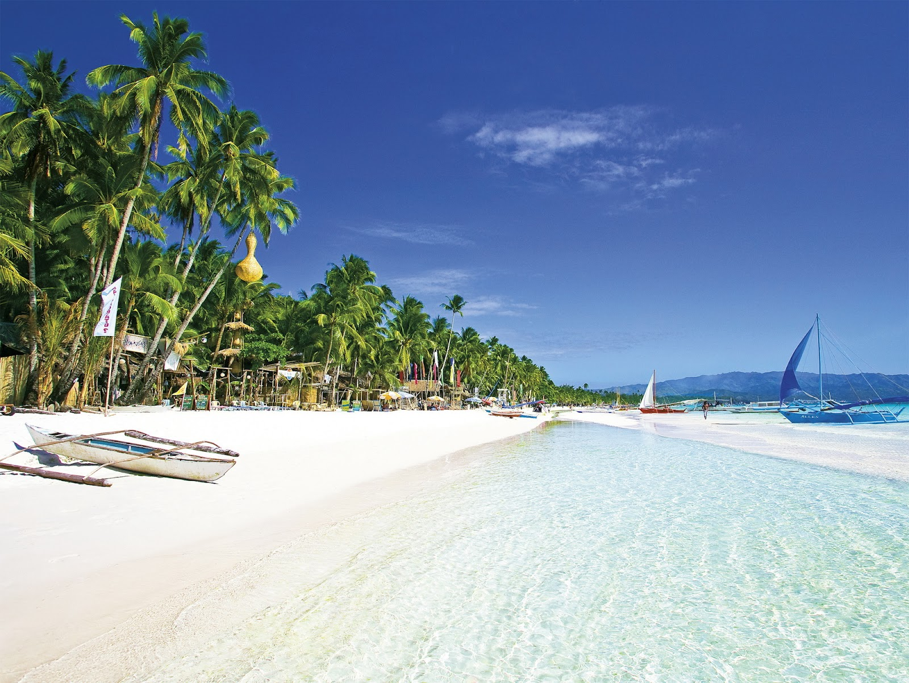

TOP TOURIST SPOT IN PHILIPPINES
LUZON PHILIPPINES
Batad Rice Terraces
Listed among the UNESCO World Heritage Sites, Batad Rice Terraces sit on a secluded and scenic mountain. It’s known for its amphitheater-like appearance with its stone walls.
One could just wonder how the locals’ ancestors built the terraces using stones and wooden tools. Aside from sightseeing, you’ll also have the chance to learn and experience how the farmers grow their crops here.
To get the best view of the rice terraces, you’ll have to assault a steep terrain to reach the viewpoint.
Sumaguing Cave
Sumaguing Cave is one of the several caves found in Sagada. It’s considered the deepest cave in the Philippines.
Inside, you’ll find stunning stalactite and stalagmite rock formations including naturally-made pools with icy-cold and crystal-clear waters. Bats also live in the cave. It is one of the most visited tourist spots in Luzon area.
Tappiya Falls
Tappiya Falls cascades for more than 50 meters, creating a wide and very deep pool. It’s one of the nearby sights to see when visiting Batad Rice Terraces.
Expect a challenging trek along a steep mountain slope before reaching the falls. But don’t worries. The sheer sight of the falls could easily dissipate your exhaustion. Tappiya Falls is one of the best tourist destinations in Luzon.

VISAYAS PHILIPPINES
San Juanico Bridge
The San Juanico Bridge[6] (Filipino: Tulay ng San Juanico; Waray: Tulay han San Juanico) is part of the Pan-Philippine Highway and stretches from Samar to Leyte across the San Juanico Strait in the Philippines.[2] Its longest length is a steel girder viaduct built on reinforced concrete piers, and its main span is of an arch-shaped truss design. Constructed during the administration of President Ferdinand Marcos through Japanese Official Development Assistance loans,[7] it has a total length of 2.16 kilometers (1.34 mi)—the second longest bridge spanning a body of seawater in the Philippines after the Cebu-Cordova Bridge. It was also the longest bridge in the Philippines upon its opening in 1973, surpassed in 1976 by Candaba Viaduct of North Luzon Expressway (NLEX), another bridge that connects from one province to another, connecting the provinces of Pampanga and Bulacan.[8][9]
Marcos built the bridge as a personal gift to his wife Imelda using public funds siphoned through the controversial Marcos Japanese ODA scandal.[8] It was one of the high-visibility foreign-loan projects initiated by Marcos during the run-up to the 1969 presidential election.[10] Completed four years later, it was inaugurated on 2 July 1973 on the birthday of Imelda Marcos.[8] Upon its completion, economists and public works engineers quickly tagged it as a white elephant because its average daily traffic was too low to justify the cost of its construction.
In the years after the Marcos conjugal dictatorship, economic activity in Samar and Leyte has finally caught up with the bridge's intended function under the guidance of several administrations from Corazon Aquino to the present administration, and has become an iconic tourist attraction.
Boracay Island
Boracay Island is a small island in the Philippines' Western Visayas region. It is one of the country's most famous tourist destinations, recognized for its stunning beaches, clear waters, and bustling nightlife.
White Beach is the island's most famous and popular beach, frequently listed in lists of the world's top beaches. It's a 4-kilometer stretch of pristine white sand and turquoise waters, ideal for swimming, sunbathing, and water sports like snorkeling and parasailing.
Aside from its stunning beaches, Boracay Island is also known for its vibrant nightlife. The island is filled with bars, clubs, and restaurants that offer a wide range of cuisines, from traditional Filipino dishes to international favorites.
The island is also home to several festivals and events throughout the year, such as the Boracay International Dragon Boat Festival and the Boracay Beach Ultimate Frisbee Tournament.
This island is the best place to visit in Visayas, Philippines if you want a fantastic beach, luxurious hotels, and vibrant night life.

Chocolate Hills
The Chocolate Hills are a distinctive geological structure in the Philippines' province of Bohol. It is made up of about 1,200 hills that cover an area of about 50 square kilometers. The hills get their name from their similarity to chocolate drops, which is most noticeable during the dry season when the grass on the hills turns brown.
The Chocolate Hills are a renowned tourist destination in the Philippines and one of the country's natural beauties. Visitors can enjoy panoramic views of the hills from observation decks built in various spots.
MINDANAO PHILIPPINES
Siargao Island
You can rent a motorcycle for a very reasonable price and roam around the island of Siargao. You will surely enjoy your stay here because the island is not crowded compared to other islands in the Philippines. You can try different types of local dishes and shop for souvenirs at the same time.
This is my favorite place in Mindanao because you will be able to feel the island life here. You can also visit the wonderful Sugba lagoon, Sohoton cave, and Bucas Grande.
You need to take ferry from Eva Macapagal Passenger Terminal in San Juan.
Mount Apo
Mount Apo is the place for people who love to go on adventurous trips. You should be in perfect shape if you’re planning on climbing this mountain. This dormant volcano is known to be the tallest peak in the Philippines. This is the perfect destination for nature lovers and for people who love hiking.
You will also see different species of plants and animals living on this mountain. The journey to the peak might be tiring and stressing but once you reach the top, all your sacrifices will surely pay off because of the beautiful views you’ll see from the top. You will see different cities from above such as the city of Kidapawan, Digos, and Davao.
Tinago Falls
Tinago Falls is located in the city of Iligan. This city is called the City of Majestic Waterfalls because of its 24 waterfalls. If you’re a big fan of waterfalls, then this is the perfect place for you. You will need to do a lot of walking if you’re planning on visiting the different falls in the city of Iligan that’s why it’s advisable to take a long rest before embarking on this kind of trip.
If you’re not ready to take on this kind of adventure, you can try visiting other waterfalls such as Maria Christina Falls which is also located in Iligan city. This place is safe for tourists who traveled with their families and friends. You will not have a problem going to this place because it is very accessible.
BACK